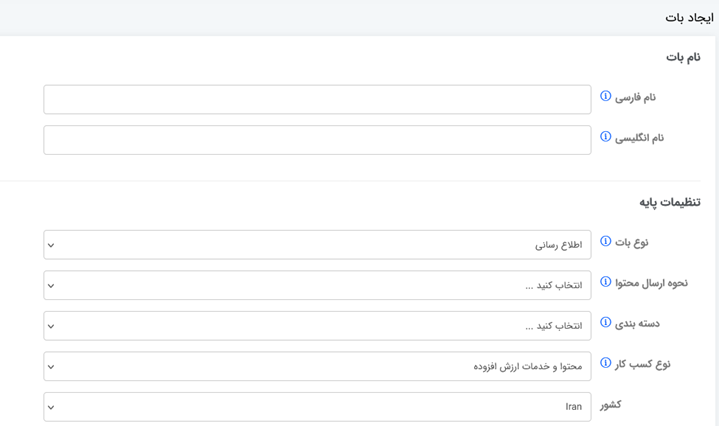
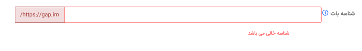

نحوه افزودن اتصال سامانه به پیام رسان «ایتا»
نحوه افزودن اتصال سامانه به پیام رسان «بله»
نحوه افزودن اتصال سامانه به پیام رسان «گپ»
نحوه افزودن اتصال سامانه به پیام رسان «آی گپ»
نحوه افزودن اتصال سامانه به پیام رسان «روبیکا»
نحوه افزودن اتصال سامانه به پیام رسان «تلگرام»
نحوه افزودن اتصال سامانه به سرویس اشتراک ویدئو «آپارات»
نحوه افزودن اتصال سامانه به سرویس اشتراک ویدئو «یوتوب»
1 - وارد سایت https://eitaayar.ir/ (ایتایار) شده و ثبت نام کنید
بعد از ثبت نام کافی است در منوهای سمت راست گزینه api را انتخاب کرده و و تولید توکن (واگر قبلا تولید کردید کفایت می کند) را انتخاب کنید
2 – ایجاد کانال (از نوع عمومی) (اگر از قبل دارید نیازی نیست) (دقت کنید که حتما اون آی دی انتهای آدرس eitaa.com را وارد کنید و در حقیقت همان عبارت به عنوان شناسه کانال شما می باشد)
دقت داشته باشید که بعد از ایجاد کانال (ویا اگر از قبل کانال دارید) باید حتما ربات @sender را به عنوان مدیر انتخاب نمایید (در ایتا وارد قسمت تنظیمات (اون علامت ⋮ ) و وارد قسمت مدیریت کانال شوید و بر روی گزینه افزودن مدیران کلیک نماییدو سپس افزودن مدیر و حالا عبارت @sender (در بخش جستجو کاربر) وارد کرده و بعد از مشاهده انتخاب کنید تا به عنوان یکی از مدیران کانال انتخاب شود)
3 – دوباره وارد سایت ایتار یار شده و در منوهای سمت راست گزینه افزودن کانال جدید را انتخاب کرده و در قسمت وسط (درخواست آدرس عمومی کانال و یا لینک عضویت کانال/سوپرگروه) نام کانال (یا گروه) (دقت کنید فقط نام کانال نه آدرس کامل ) را وارد نمایید.
4 – بعد از ثبت نام کانال در قسمت افزودن کانال
در سایت ایتاریار، و نمایش «کانال با موفقیت اضافه شد» در فهرست نمایشی اطلاعاتی
راجع به کانال مربوطه به شما نمایش میدهد که ستون اول آن شناسه کانال می باشد
(عددی) کافی است مقدار آن را کپی کرده و در قسمت تنظیمات سایت قسمت شناسه کانال
وارد نمایید.
همچنین کافی است از همان صفحه مربوطه (در ایتایار) عبارت موجود در ستون آدرس عمومی
کانال محتوا را کپی کرده و در قسمت مربوطه (نام کانال شما) در سایت خودتان وارد
نمایید.
1- ساخت بازو (بات) در بله و گرفتن توکن
وارد صفحه توسعهدهندگان بله به آدرس بازوی بله BotFather بشو (در سربرگ های بالای پیام رسانه بله (همه، شخصی، گروه، کانال، بازو) را انتخاب کرده و در لیست بازوها (ربات ها) (عبارت BotFather) را سرچ کنید و بعد از ورود به صفحه چت با بازوی BotFather از بین منوها پیشنهادی گزینه «ساخت بازوی جدید» را انتخاب کنید، بعد نام بازو را تایپ کرده (که باید چنین شرایطی داشته باشد: (بیش از 4 کاراکتر، شامل اعداد و حروف انگلیسی، به عبارت bot ختم شود)
بعد از ایجاد پیام رسانه بله برای بازوی شما یه توکن ایجاد کرده و آن را به شما نمایش می دهد (یه عبارت تقریبا 50 کاراکتری ترکیبی از حروف انگلیسی و اعداد و ... مانند: abcdIuZmK5qNEm2A1BhUaAg7MPJv1O9KCcBQB2ro) در حفظ و نگهداری و حفظ امنیت آن کوشا باشد (می بایستی به هنگام ایجاد انتشار در پیام رسانه بله در این بخش از سایت آن را وارد نمایید)
- مناسب است بعد از ایجاد بازو حتما به آن قابلیت عضویت در گروه را بدهید ودر صورت تمایل پیام خوش آمدگویی و محتوای خوش آمدگویی و یا توضیحات و نوع دسته بندی و حتی تصویر لوگو سایتتون رو به عنوان تصویرپروفایل بازو وارد نمایید
2- عضویت بازو در کانال (یا گروه) و افزودن قابلیت مدیریت به آن بازو
وارد کانال یا گروهی
که خودتان به عنوان ادمین (مدیر) هستید و می خواهید که این بازو در آنجا برایتان
مطالب را منتشر کند بشوید ، روی عکس و یا نام آن کلیک کرده و سپس بر روی آیتم
تنظیمات کلیک کرده و بعد روی عبارت مدیران و سپس افزودن مدیر جدید کلیک نمایید.
آنگاه با استفاده از قابلیت جستجو نام بازوی موردنظر خود را جستجو نمایید
- در صورت عدم نمایش نام بازو به هنگام اضافه کردن به عنوان مدیر، ابتدا به عنوان
اعضاء کانال آن بازو را اضافه کنید و باز اگر در این بخش نیز نتوانستید با جستجو
نام بازوی خود را پیدا کنید (ممکن است نام کاربری بازو شما در بله هنوز ایندکس
نشده باشد (نهایتا یه تأخیر چند دقیقه ای دارد)) و جهت سرعت بخشیدن به این بخش از
کار می توانید لینک مستقیم بازوی خود را در مرورگر وارد کنید به آدرس: https://ble.ir/bot_YourBot (کافی است نام بازوی خود را
به جای عبارت bot_yourbot قرار دهید) و بعد از باز شدن صفحه باتن ای جهت باز شدن بازو در
محیط پیام رسان بله می دهد که شما با تأیید آن ، بازوی موردنظر خود را در محیط
پیام رسان بله باز می کند و آنجا کافی است تا آیتم شروع را کلیک نمایید (بعد از
این کار دیگر نباید در جستجو بخش مدیران کانال مشکلی با عدم نمایش نام بازوی خود
داشته باشید)
3 – شناخت شناسه کانال (chat_id)
اگر کانال @channel_username دارد، معمولاً میتوانی همین @channel_username را بهعنوان chat_id ثبت کنید
1 – نصب و ثبت نام در پیام رسان گپ (آدرس: https://web.gap.im/ (
2 – ورود به پرتال کسب و کار گپ، ساخت ربات، و دریافت توکن (آدرس: https://my.gap.im/)
ابتدا وارد سایت https://my.gap.im/ شده و پس از ثبت شماره موبایل و دریافت پیام (صوتی) ، عدد موردنظر را ثبت کرده و وارد میشوید، در صفحه مربوطه بر روی گزینه بات پلتفرم کلیک کرده و سپس از منوهای بالا گزینه ایجاد بات را انتخاب می کنید


اطلاعات فوق (نام فارسی، نام انگلیسی، نوع بات (الزاما اطلاع رسانی) نحوه ارسال (الزاما گروهی)، دسته بندی (متناسب با نوع محتوای فروشگاه خودتان)، نوع محتوا (فروش برون برنامه ای)، و در قسمت پایین تر شناسه بات (که از حروف انگلیسی و اعداد تشکیل شده و الزاما باید به عبارت _bot تمام شود) و چند متن دیگر در ذیل صفحه (توضیحات، پیام خوش آمد، پیام خداحافظی) را وارد کرده و ذخیره را کلیک نمایید
اگر ربات را از نوع اطلاع رسانی ایجاد کنید، کاربر قادر به ارسال پیام برای برنامه شما نیست. (مشابه کانال ارتباط یک طرفه است)
اگر ربات را از نوع تعاملی ایجاد کنید، کاربران میتوانند برای شما پیام ارسال کنند.
اگر نحوه ارسال محتوا فردی باشد، هنگام ارسال پیام، شما باید پیام را برای تک تک کاربران بصورت جداگانه ارسال کنید.
اگر نحوه ارسال محتوا گروهی باشد، برای ارسال پیام کافیست در قسمت chat_id شناسه ربات را ارسال کنید.
بصورت کلی اگر ربات شما عملکردی مشابه کانال دارد، بهتر است ربات را از نوع اطلاع رسانی و نحوه ارسال محتوا را گروهی انتخاب کنید، و اگر شما قصد ایجاد یک ربات دو طرفه(امکان ارسال و دریافت پیام) را دارید بهتر است نوع ربات تعاملی انتخاب شود.
دریافت TOKEN
در صورت تکمیل صحیح اطلاعات مورد نیاز، هنگام ایجاد ربات، مرورگر شما را به لیست رباتهایی که ایجاد کردهاید، هدایت میکند که در این صفحه میتوانید با کلیک روی آیکن ، جزئیات ربات و توکن مورد نیاز برای ارتباط با آن را مشاهده، کپی و یا تغییر دهید.
با زدن آدرس https://web.gap.im/?p=@yourname_bot می توانید به صفحه بات موردنظر خود دسترسی پیدا کنید و از آنجا آیتم شناسه (که معمولا همون نام شناسه بات با کاراکتر @ در ابتدایش می باشد) را کپی کرده و در قسمت مربوط در سایت فروشگاهی خود وارد نمایید
و همچنین با دادن آدرس https://gap.im/yourname_bot می توانید لینک عضویت و معرفی بات خود را برای دیگران (مشتریان و ...) ارسال کرده تا آنها با عضویت در این بات بتوانند پیام های شما را دریافت کنند
1 – نصب و ثبت نام در پیام رسان گپ (آدرس: https://web.igap.net )
2 – به دنبال آی دی botland (ربات) می گردید و بعد از ورود به صفحه چت این بات می توانید با انتخاب «ایجاد ربات جدید» ربات جدید خود را بسازید(اسم، نام کاربری (الزاما باید عبارت bot ابتدا یا انتها باشد)) و توکن اختصاصی خود را دریافت و در سامانه ثبت می کنید
3 – کانال خود را ایجاد کرده و در کانال ایجاد شده ربات خود را ابتدا به صورت عضو و بعد از لیست اعضاء قابلیت تبدیل به مدیر را انتخاب می کنید
1 – ثبت نام در پیام رسان روبیکا (آدرس: https://web.rubika.ir )
2 – به دنبال آی دی BotFather (ربات) می گردید و بعد از ورود به صفحه چت این بات می توانید با انتخاب «ایجاد بات جدید» بات جدید خود را بسازید(اسم، نام کاربری) و توکن اختصاصی خود را دریافت و در سامانه ثبت می کنید
3 – کانال خود را ایجاد کرده (علامت مداد در پایین لیست مشترکین ) ابتدا باید عضوی را به این کانال اضافه کنید (می توانید نام ربات خود را انتخاب کنید و اگر در جستجو نیامد نام شخص دیگر را اضافه کنید و بعد از مرحله بعد (نام کانال و ...) که کانال ایجاد شد با قابلیت افزودن اعضاء نام بات خود را جستجو کرده و آن را به اعضاء کانال اضافه کنید ، جهت افزودن بات به عنوان مدیر روی عنوان کانال کلیک کرده بعد از نمایش پنجره اطلاعات کانال روی آیکون مداد کلیک نمایید و آنگاه منو مدیر را انتخاب نمایید در پنجره جدید لیست اعضاء کانال را نمایش می دهد و شما می توانید بات موردنظر خود را انتخاب کرده و به عنوان مدیر به آن سطح دسترسی بدهید.
و در کانال ایجاد شده ربات خود را ابتدا به صورت عضو و بعد از لیست اعضاء قابلیت تبدیل به مدیر را انتخاب می کنید
نکته: حتما دقت کنید در قسمت مدیریت کانال (ویرایش) وقتی روی علامت مداد کلیک کردید نوع کانال حتما عمومی باشد و بعد از کلیک بر روی نوع کانال برای کانال خود لینک بگذارید (یه نام برای کانال خود انتخاب کنید، که طبیعتا باید قبلا این نام وجود نداشته باشد)و این نام را به عنوان نام کانال خود (به همراه علامت @) در ابتدایش قرار دهید
1 – بعد از ورود به تلگرام باید یک ربات بسازید ، مراحل ساخت ربات در تلگرام :
جستجوی BotFather در بخش جستجوی تلگرام، @BotFather را جستجو کرده و آن را باز کنید (مطمئن شوید که تیک آبی تأیید را دارد).
شروع مکالمه: دکمه Start/ را بزنید یا دستور /start را ارسال کنید.
انتخاب دستور ساخت ربات: دستور /newbot را ارسال کنید.
تعیین نام نمایش: BotFather از شما میخواهد که یک نام نمایشی (Display Name) برای ربات انتخاب کنید (مثلاً "ربات فروشگاه تهران"). این نام هر چیزی میتواند باشد.
انتخاب نام کاربری: در مرحله بعد، باید یک نام کاربری (Username) برای ربات انتخاب کنید.
این نام: باید حداقل ۵ کاراکتر باشد و فقط میتواند شامل حروف انگلیسی، اعداد و زیرخط (_) باشد.
حتماً باید با کلمه bot به پایان برسد (مثلاً TehranShop_bot یا MyStoreBot).
دریافت توکن: پس از موفقیتآمیز بودن نام کاربری، BotFather پیام تبریک را ارسال میکند. مهمترین بخش این پیام، توکن API (HTTP API Token) ربات شما است که شبیه به این ساختار است: 123456:ABC-DEF1234ghIkl-KJL... و این مقدار در بخش مربوطه در سایت ثبت نمایید
2 – ایجاد کانال (از نوع عمومی) و افزودن ربات به کانال به عنوان ادمین، مراحل افزودن ربات به عنوان ادمین کانال:
باز کردن تنظیمات کانال: به کانال خود بروید و روی نام کانال در بالای صفحه کلیک کنید تا وارد بخش اطلاعات و تنظیمات شوید.
مدیریت مدیران (Administrators): وارد قسمت مدیریت (Manage) یا تنظیمات (Settings) شوید و گزینه مدیران (Administrators) را انتخاب کنید.
افزودن مدیر جدید: گزینه افزودن مدیر (Add Administrator) را بزنید.
جستجوی ربات: در قسمت جستجو، نام کاربری ربات خود (مثلاً @MyStoreBot) را وارد کنید و آن را انتخاب نمایید.
اعطای مجوز ارسال: در صفحهای که باز میشود، مطمئن شوید که گزینه "ارسال پیامها (Post Messages)" فعال باشد. این مجوز برای ارسال پیام توسط ربات شما ضروری است.
ذخیره: دکمه تأیید (Done✓) را بزنید تا ربات شما به عنوان مدیر کانال، با مجوزهای تعیینشده، اضافه شود.
نکته: دقت داشته باشید که کانال شما حتما باید نام و لینک معتبر داشته باشد (در قسمت مدیریت کانال، بخش تعیین نوع کانال (عمومی) ، آیتم لینک حتما برای کانال خود یک عبارت انگلیسی (طبیعتا غیرتکراری و جدید) باید بگذارید که این عبارت را با علامت @ در قسمت مربوطه در سایت ثبت نمایید.
در صورت نیاز به پروکسی (با توجه به بحث فیلتربودن تلگرام) می توانید از پروکسی ها رایگان (یا پولی) که قابلیت پشتیبانی از https را دارند استفاده نمایید ، مانند لینک ذیل:
https://free-proxy-list.net/en/google-proxy.html
https://proxyscrape.com/free-proxy-list
البته دقت داشته باشید که به هنگام برداشتن آی پی و پورت (معمولا بدون پسورد هستند) باید به شکل ذیل در بخش مربوطه ثبت کنید.
https://ip{آی پی که از سایت گرفته اید}:port{پورتی که در سایت مشخص کرده}
نکته: سعی شود از پروکسی ها با پورت ها معمول مثل پورت 20 – 80 – 110 و ... استفاده کنید که بعضا برخی سرورها بیشتر پورت ها (هم ورودی هم خروجی) را مسدود می کنند و شما به هنگام استفاده از این پروکسی ها با پیغام خطای Connection refused. مواجه می شوید
1 – ثبت نام در سایت آپارات (آدرس: https://www.aparat.com )
2 –به قسمت پروفایل داشبورد ( https://www.aparat.com/dashboard/profile ) وارد شوید
3 –نام کانال (نام کاربری) خود را بدست بیاورید (سربرگ اطلاعات کانال آیتم اول نام کاربری) و یا اینکه ،بعد از ورود به اکانت روی لوگو (اگر ثبت کردید) بالا سمت چپ کلیک کرده در پنجره ای ذیلش باز شده در خط اول نام کانال را نمایش می دهد)
همچنین خط دوم مشاهده کانال خود لینک می باشد که می توانید این لینک را به عنوان لینک اینترنتی در سایت ثبت کنید.
هم اکنون درقسمت فهرست پیام رسان ها به هنگام افزودن بر روی آپارات در قسمت نام کانال شما (نام کاربری کانال) همان آیتم بدست آمده در بخش 3 را وارد کرده و بقیه قسمت ها همچون نام کاربری (ایمیل و یا شماره همراه مرحله ورود به سایت آپارات) و اسم رمز کاربری (پسورد اکانت کاربری شما در آپارات) را ثبت کنید.
1 – ثبت نام در سایت یوتوب (آدرس: https://www.youtube.com/ ) و ثبت نام در سایت گوگل کنسول (آدرس: https://console.cloud.google.com/ )
2 – در سایت گوگل کنسول یک پروژه بسازید.
3 - از بخش API & Services → Enabled APIs & Services
4 - دکمه ENABLE APIS (فعال کردن بخش api & services)
5 - سرچ کن: YouTube Data API v3 و فعال کردن آن (Enable api)
ساخت OAuth 2.0 Client
از مسیر:
API & Services → Credentials → Create Credentials → OAuth Client ID
نوع اپلیکیشن معمولاً Web Application
در قسمت name عبارت دلخواه (مثل: upload video to youtube)
در بخش Authorised redirect URIs کلیک کرده و آدرس ذیل را به عنوان آدرس redirect addres اضافه کنید
https://www.نام دامنه شما.ir/register-youtube/
و سپس روی باتن create کلیک می کنید
بعد از ایجاد پنجره ای جلوی شما ظاهر می شود که به شما مقادیر Client ID و Client Secret ارائه می دهد این دو مقدار را یادداشت و در قسمت فهرست پیام رسان ها – ایجاد بر روی یوتوب در مقادیر درخواستی وارد نمایید.
6 – دقت داشته باشید که در صورتی که پروژه سایت شما معمولی هست (زیر 100 کاربر و همگی آنچه که می شناسید) (معمولا فقط یک ایمیل و آن مدیر سایت می باشد) پروژه شما باید در حالت test باشد و نه در حالت publish و در حالت test هم کافی است که فقط ایمیل موردنظر (و یا ایمیل های موردنظر که قرار است از سایت شما ویدئو در یوتوب آپلود کنند) در بخش
Audience و آیتم Test users رفته روی باتن add users کلیک کرده و ایمیل موردنظر خود را وارد نمایید.
Console cloude google --- select a project –- dashboard --- APIs and Services --- OAuth consent screen – Audience
در صفحه audience با سرفصل عبارت Publishing status اگر در ذیلش عبارت testing باشد یعنی همان حالت پیش فرض که باید هر کاربر (یوزری) که می خواهید این قابلیت را داشته باشد در پایین صفحه از طریق باتن add users ایمیل (جیمیل) اش را وارد کنید
و اگر بخواهید به صورت نامحدود و به صورت حرفه ای (پیشنهاد نمی کنم) این قابلیت را در سایت خود داشته باشید باید در ذیل قسمت publishing status باتن publish app را بزنید و سؤالات مربوطه توسط گوگل را وارد کنید که این پروسه (تایید توسط گوگل بین 3 تا 5 هفته طول می کشد) و در این مدت ایمیل نگاری بین تیم فنی Audience برای شما ارسال می گردد که معمولا شما باید به صورت ویدئو و ... آنها را قانع نمایید که چرا نیاز به ایجاد چنین مجوز (پرمیشنی) در سایت خود هستید.
تبصره: دقت داشته باشید هنگامی که اپ (برنامه ) شما به صورت testing هست و شما به صورت دستی ایمیل اشخاص موردنظرتان را اضافه کردید به هنگام گرفتن توکن اولیه (اصلی) (که با کلیک بر روی ایمیل و تاییده گوگل) ، گوگل پیام هشداری مبنی بر اینکه گوگل این برنامه را تأیید نکرده است « Google hasn’t verified this app» مشاهده می کنید که در آن هنگام هم بدون توجه به هشدار باید آیتم continue را کلیک نمایید.
در صورت نیاز به پروکسی (با توجه به بحث فیلتربودن یوتوب) پیشنهاد می شود از پروکسی های معتبر (نه رایگان) استفاده کنید و حتی بعضا وی پی اس های اختصاصی ، چرا که برای آپلود ویدئو شما نیازمند یک پروکسی پایدار و معتبر می باشد و اکثرا پروکسی ها رایگان و آی پی های معروف و تکراری توسط گوگل شناسایی شده و معمولی امکان اتصال را ارائه نمی دهد چه برسد به آپلود ویدئو
تبصهر: البته دقت داشته باشید که به هنگام برداشتن آی پی و پورت (معمولا بدون پسورد هستند) باید به شکل ذیل در بخش مربوطه ثبت کنید.
https://ip{آی پی که از سایت گرفته اید}:port{پورتی که در سایت مشخص کرده}
نکته: سعی شود از پروکسی ها با پورت ها معمول مثل پورت 20 – 80 – 110 و ... استفاده کنید که بعضا برخی سرورها بیشتر پورت ها (هم ورودی هم خروجی) را مسدود می کنند و شما به هنگام استفاده از این پروکسی ها با پیغام خطای Connection refused. مواجه می شوید